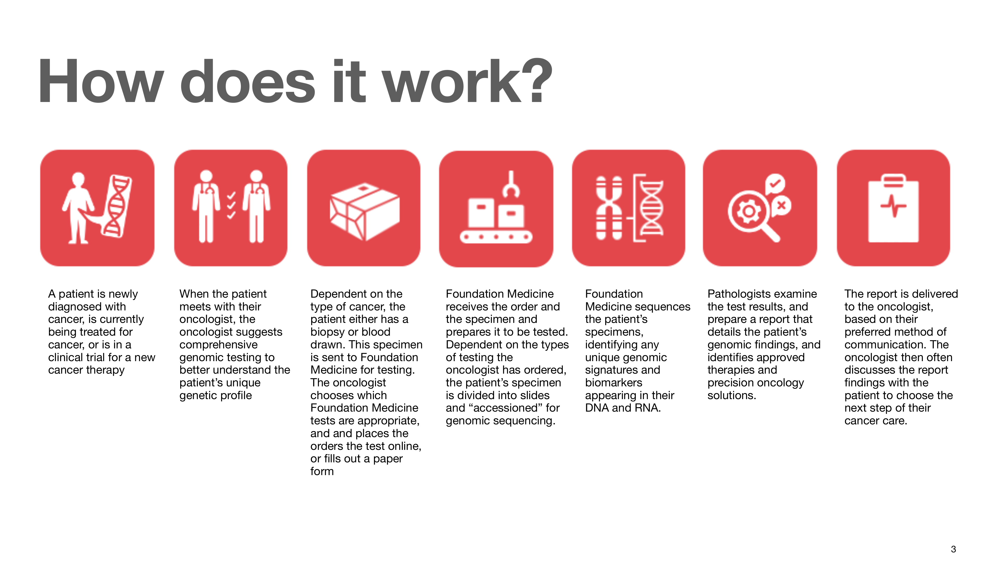
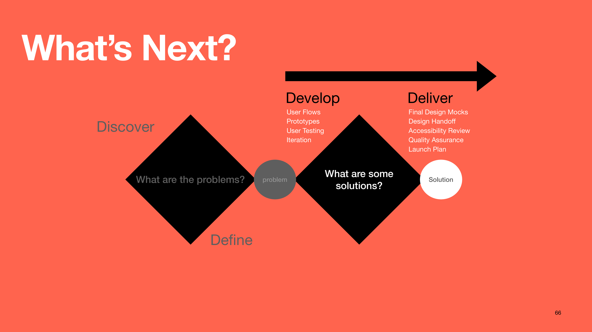

Reinventing the genomic test ordering experience for oncologists — moving from fragmented, paper-heavy workflows to a modern, patient-centric platform built on Salesforce.
Background
Foundation Medicine provides physicians a suite of genomic profiling tests and clinical reporting services designed to identify a cancer patient's biomarkers and unique genetic signatures. Genomic testing supports oncologists' clinical decision making — providing them critical information to select treatment pathways, precision oncology therapies, and clinical trials most appropriate for their patients' individual needs.

The end-to-end genomic testing journey, from diagnosis through clinical reporting.
A patient newly diagnosed with cancer meets with their oncologist, who recommends comprehensive genomic testing. The oncologist orders the appropriate Foundation Medicine tests — either online or via paper form. The specimen is processed, sequenced, and analyzed, and a detailed genomic report is delivered back to the oncologist to inform the next step of their patient's cancer care.
The Project
As part of an organization-wide mandate to migrate Foundation Medicine's products, data, and front-end systems to the Salesforce platform, the Product Design team was tasked with redesigning the comprehensive genomic test ordering portal and test results platform from the ground up.
The design strategy was focused on elevating Foundation Medicine's genomic testing experience to support a robust, patient-centric experience for oncologists — simplifying complex clinical workflows while delivering measurable improvements in order completion rates and clinician satisfaction.
Challenges
All products moving onto Salesforce; existing UI needed to be rebuilt from scratch.
Genomic data being restructured to ensure scalability and long-term delivery of clinical insights.
Backend systems and UI needed to be fully integrated for the first time.
Current ordering experience was not meeting customer needs; high drop-off and paper fallback rates.
Competitors offering more tests and better digital experiences — urgency to modernize.
Genomic test ordering spans oncology and pathology teams, but the platform offered no support for that collaboration — leading to user frustration and unmet needs.
Design Approach
Forging partnerships across the organization was critical — requirements, scope, and MVP were developed collaboratively with engineering, clinical, and business stakeholders. Prioritization was continuous and deliberate, knowing which pieces could be compromised versus negotiated at every stage.
Reflections

Forging partnerships across the organization proved to be the single most critical factor for success. Complex enterprise design doesn't succeed in isolation — it requires deep collaboration across clinical, engineering, and business teams from day one.
Collaborative development of requirements, scope, and MVP ensured alignment and prevented costly rework downstream. Knowing which pieces could be compromised versus negotiated — and communicating that clearly — kept the team moving. Above all: prioritize, reprioritize, and prioritize again.